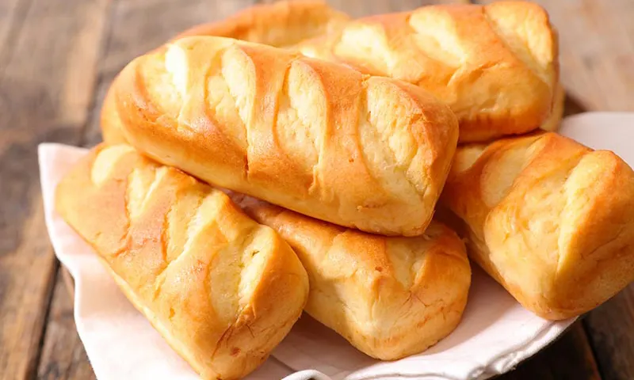

Aqui te mostraremos algunas de las recetas mas clasicas de la panadria, para que puedas empezar
Pan Clasico
Levadura.....................15gr
Harina.................500gr
Agua (tibia)....................320lt
Sal.................................10gr
Aceite...................45lt

Fermentar la levadura: desgranar el cubo de levadura junto con agua y una cucharada de azúcar y harina.
Mezclar la manteca (pomada) y el azúcar, hasta obtener una mezcla cremosa, luego agregar el huevo, una pizca de sal y una cucharada de esencia de vainilla
Luego de integrar, volcar la leche junto con el resultado de la fermentación de levadura.. batir un poco. Después, agregar de a poco la harina, hasta tener una masa homogénea y suave. Dejar leudar 45 min.
Estirar la masa y formar triángulos para hacer la forma de las medialunas.
Dejar leudar unos 30 minutos más.
Cuando ya se hayan leudado, poner a calentar el horno a 160°, y pincelear con huevo. Llevar al horno, durante 40-50 minutos.
Preparar el almíbar, y retirar las medialunas cuando tengan el dorado que más les guste. Y a comer!!!!!!
Medialunas de Manteca
Levadura.....................50gr
Harina 000.................1000gr
Leche (tibia)....................200lt
Azucar.................................200gr
Huevo...................1u
Escencia de Vainilla
Manteca...................200
Tomamos el agua tibia, la colocamos en un recipiente amplio y hondo. Allí añadimos la levadura desmenuzada y el azúcar. Una vez hecho esto, revolvemos hasta que la levadura y el azúcar queden integrados en el agua formando una materia homogénea.
Agregamos la mitad de la harina y la totalidad del aceite. Revolvemos bien, aplastando los grumos que se formen. Una vez hecho esto, dejamos reposar la masa durante 20 minutos a temperatura ambiente. Se cubrirá con un trapo limpio y debajo de éste, la masa irá levando lentamente.
Una vez que finalice el tiempo de reposo, se incorpora la harina restante y la sal. Se vuelve a revolver hasta que se genere una masa espesa difícil de seguir revolviendo.
Se espolvoreará la superficie de trabajo (generalmente es una mesada) con harina para evitar pegotes. La masa se volcará sobre esta superficie y nosotros nos engrasaremos las manos con aceite para amasar durante algunos minutos.
Formaremos una bola con la masa y la colocaremos en una bandeja de horno. La misma deberá tener un poco de aceite en su superficie.
Una vez que la masa esté en la bandeja, le haremos dos recortes en su parte superior con un cuchillo afilado.
Metemos la bandeja con la masa en el horno, precalentado a 200 grados centígrados con calor arriba y abajo. Dejamos cocinar durante 45 minutos, lo sacamos y dejamos enfriar antes de que el pan casero llegue a la mesa. ¡Y listo! Receta terminada.
Medialunas de grasa
Levadura.....................5gr
Harina 000.................500gr
Agua (tibia)....................300lt
Sal.................................7gr
Azucar...................30gr
Poner la harina 000, la sal y el azúcar en un bol. Mezclar. Disolver la levadura en el agua tibia. Ir agregando de a poco el agua a la mezcla del bol y mezclar bien. Amasar pero no demasiado, queda una masa un poco pegajosa. Envolver con un film y dejar en heladera descansando unas 4 horas.
Sacar de la heladera. Pintar con aceite de oliva Morixe la mesada o tabla y la masa por encima. Con las manos – no usar palo de amasar – estirar la masa formando un rectángulo. Una vez estirada la masa en forma de rectángulo taparla y dejarla en reposo 30 minutos.
Luego del descanso volver a estirar a mano sin que se rompa la masa. NO usar palo de amasar.